첫걸음Vibe 编程
第一步
오늘 배울 것今天要学的
- 1 · 바이브 코딩이란? AI와 함께 만드는 새로운 코딩1 · 什么是 Vibe 编程? 与 AI 一起做的新式编程
- 2 · 기초 CS 지식 언어·GUI/CLI·웹 3종·Git2 · 基础计算机知识 语言·GUI/CLI·网页三件套·Git
- 3 · 개발환경 설치 VS Code·Git·OpenCode3 · 安装开发环境 VS Code·Git·OpenCode
- 4 · 프롬프트 엔지니어링 AI에게 잘 시키는 법4 · 提示词工程 如何把话说清楚让 AI 做好
- 5 · 컨텍스트 엔지니어링 AI의 기억을 관리하는 법5 · 上下文工程 管理 AI「记忆」的方法
- 6 · 기획 → 7 · 개발 → 8 · 배포 PRD·목업·MVP·인터넷 공개6 · 规划 → 7 · 开发 → 8 · 部署 PRD·原型·MVP·上线公开
키보드 ← → 또는 오른쪽 아래 화살표로 이동. 코드 상자의 복사 버튼으로 명령어를 그대로 가져가요. 수업 후 3일 동안 복습할 자료이기도 해요.用键盘 ← → 或右下角箭头翻页。用代码框的 复制 按钮直接拿走命令。它也是课后 3 天 复习的资料。
오늘의 목표는 딱 하나今天的目标只有一个
“내가 기획한 것을, 만든 데까지, 인터넷 주소로 올려본다.”“把我规划的东西，做到哪算哪，发布成一个网址。”
하루에 완성하는 건 원래 불가능해요. 그래서 목표는 완성이 아니라 ‘만든 데까지’ 올려보기. 이후 3일 동안 매일 조금씩 이어서 완성해요.一天完成本来就不可能。所以目标不是完成，而是 把「做到哪算哪」发布上线。之后 3 天每天做一点，慢慢完成。
이 자료 열기 · 저장소打开课件 · 代码仓库
https://aightlabs.github.io/jdh-school-vibe-coding/https://github.com/AightLabs/jdh-school-vibe-coding휴대폰 카메라로 왼쪽 QR을 찍으면 이 슬라이드가 열려요. 수업 내내 옆에 두고 따라오세요.用手机相机扫左边二维码就能打开本课件。整堂课放在旁边跟着做。
코드 · 코딩 · 바이브 코딩代码 · 编程 · Vibe 编程
컴퓨터는 빠르지만 스스로 알아서 하지 못해요. “이걸 이렇게, 그다음 저렇게”를 순서대로 정확히 적어줘야 하죠.电脑很快，但 不会自己判断。要 按顺序、精确地 写清「先这样，再那样」。
‘Vibe(바이브)’는 ‘분위기·느낌’이라는 뜻 — 딱딱한 문법 대신 “이런 느낌으로 만들어줘” 하고 대화하듯 만든다고 해서, AI 연구자 안드레이 카파시가 ‘바이브코딩’이라 불렀어요.「Vibe」是「氛围·感觉」的意思 —— 不抠语法，像聊天一样说「做成这种感觉」来做东西，所以 AI 研究者 Andrej Karpathy 把它叫「Vibe Coding」。
바이브코딩엔 이 2가지가 중요해요Vibe 编程，这两点最重要
AI가 코드를 대신 써주니, 남는 건 두 가지 — 만들 대상을 내가 알고, 그걸 잘 설명하는 거예요.AI 帮你写代码，剩下两点 —— 先懂 要做的东西，再 说清楚。
- 내가 그 대상을 알기 — 만들려는 것 자체(내용·주제)를 알아야 무엇을 만들지 그려져요先懂那个主题 —— 懂要做的东西本身(内容·主题)，才知道要做什么
- 구체적으로 잘 설명하기 — 아는 걸 또렷하게 말할수록 원하는 결과가 나와요说得具体清楚 —— 把懂的东西讲明白，越接近想要的结果
지금은 이 2가지만 하면 돼요. 코드 원리를 깊이 파고드는 건 전문가·개발자로 나아갈 때의 이야기고요. AI는 똑똑한 조수, 방향을 정하는 건 나예요.现在做好 这两点 就行。深挖代码原理，是 走向专家·开发者 时的事。AI 是聪明助手，定方向的是 我。
개발환경 세팅基础知识 &
开发环境搭建
오늘 준비할 도구들今天要准备的工具
코드를 쓰는 작업실(에디터).写代码的工作台(编辑器)。
말로 코드를 만드는 무료 AI 도구.用说话生成代码的免费 AI 工具。
코드를 GitHub로 보내는 배달부.把代码送到 GitHub 的快递员。
코드 보관·공개하는 곳. 이미 가입 완료!保管·公开代码的地方。已注册好!
편집기(VS Code) → AI 도구(OpenCode) → 버전관리(Git·GitHub) 순으로, 하나 깔 때마다 왜 필요한지 같이 짚어요. 명령어는 PowerShell에 복사→붙여넣기→Enter.按 编辑器(VS Code) → AI(OpenCode) → 版本管理(Git·GitHub) 的顺序，每装一个都讲清 为什么需要。命令在 PowerShell 里复制→粘贴→回车。
코드 = 텍스트, 웹앱은 3종 세트代码 = 文本，网页应用是三件套
- HTML — 뼈대 · 무엇이 있는지 (제목, 버튼, 이미지)骨架 · 有什么(标题、按钮、图片)
- CSS — 꾸미기 · 어떻게 보이는지 (색, 크기, 배치)美化 · 长什么样(颜色、大小、排版)
- JavaScript — 움직임 · 무엇을 하는지 (클릭, 반응, 계산)交互 · 会做什么(点击、反应、计算)
코드는 결국 글자(텍스트) 파일이고, 확장자(.html .js)가 종류를 정해요. 이 셋을 한 파일(index.html)에 담아 만들려면 글자를 편하게 쓸 편집기가 필요하죠 — 그래서 제일 먼저 VS Code를 깝니다.代码说到底就是 文字(文本)文件，后缀名(.html .js)决定类型。要把这三样放进 一个文件(index.html)，就需要能顺手写字的 编辑器 —— 所以先装 VS Code。
GUI 와与 CLI
아이콘·버튼을 눈으로 보고 클릭. 평소 쓰는 화면.看着图标·按钮 用眼看、用手点。就是平时用的界面。
검은 창에 글자로 명령을 타이핑. 빠르고 정확.在黑窗口里 用文字敲命令。快而准。
PowerShell·터미널이 CLI예요. 지금부터 설치·실행은 검은 창에 복사→붙여넣기→Enter. 그런데 왜 굳이 검은 창을 쓸까요? →PowerShell·终端 就是 CLI。接下来的安装·运行都在黑窗口 复制→粘贴→回车。可为什么非要用黑窗口? →
개발자들이 CLI를 좋아하는 이유开发者为什么爱用 CLI
- 빠르고 정확 — 메뉴를 찾아 클릭할 필요 없이 명령 한 줄로 끝. 복사·붙여넣기하면 오타도 없어요快而准 —— 不用翻菜单点，一行命令搞定。复制粘贴还不会打错
- 자동화·반복 — 여러 작업을 하나로 묶어 한 번에 실행 (수백 번도 똑같이)自动化·重复 —— 把多步打包一次执行(几百次也一样)
- 어디서나 똑같이 — 화면 없는 서버·클라우드도 명령어로 다뤄요到哪都一样 —— 没有画面的 服务器·云 也用命令操作
- 기록·공유가 쉬움 — 명령을 그대로 복사해 남기고 나눌 수 있어요 (이 수업의 코드 상자처럼!)易记录·分享 —— 命令可原样复制、保存、分享(就像本课的代码框!)
설치·실행·배포를 명령어(CLI)로 해요. 처음엔 낯설어도 복사→붙여넣기→Enter면 충분해요.安装·运行·部署都用 命令(CLI)。一开始陌生，但 复制→粘贴→回车 就够了。
1) Node.js 설치安装 Node.js
OpenCode는 npm(도구를 한 줄로 까는 ‘앱스토어’)으로 설치해요. 그 npm이 Node.js(브라우저 밖에서도 자바스크립트를 돌리는 엔진) 안에 들어 있어서, AI 도구를 깔려면 Node부터 필요해요.OpenCode 用 npm(一行命令装工具的「应用商店」)安装。而 npm 在 Node.js(让 JavaScript 在浏览器之外也能运行的引擎)里 —— 所以装 AI 工具要 先装 Node。
winget install OpenJS.NodeJS.LTS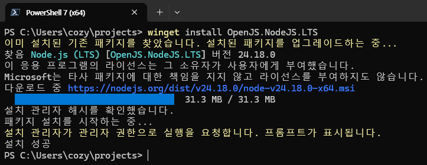
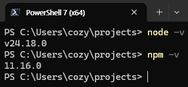
node -v·npm -v → 숫자 나오면 성공② node -v·npm -v → 出现数字就成功npm이 인식 안 되면 PowerShell을 껐다 켜세요. (winget 실패 시 nodejs.org)若 npm 不识别，关掉再开 PowerShell。(winget 失败用 nodejs.org)
2) OpenCode 설치 + 실행安装 + 运行 OpenCode
npm i -g opencode-ai@latestopencode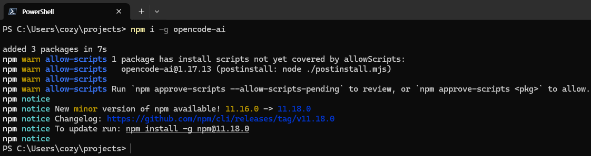
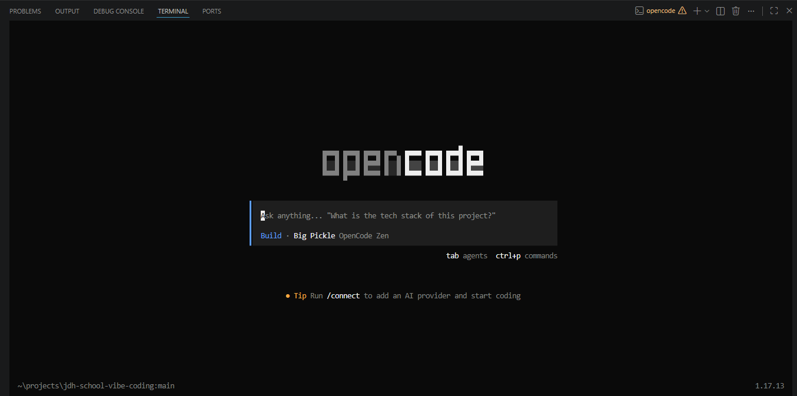
3) Git 설치安装 Git
winget install Git.Git곧 스타터를 git clone으로 받을 때 쓰고, 나중에 배포에도 써요.等下 git clone 下载模板要用，之后 部署 也用它。
PowerShell을 껐다 켠 뒤 git --version → 숫자가 나오면 성공. (이름표 등록은 프로젝트를 연 뒤에 해요)关掉再开 PowerShell，输入 git --version → 出现数字就成功。(名字登记等打开项目后再做)
4) 스타터 받기 (git clone)下载模板 (git clone)
스타터가 든 저장소를 통째로 내려받아요. 여기서 원하는 스타터를 꺼내 내 폴더에 담을 거예요.把装着模板的仓库整个下载下来。等下从里面取出想要的模板，放进我的文件夹。
git clone https://github.com/AightLabs/jdh-school-vibe-coding.git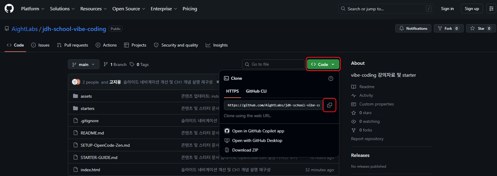
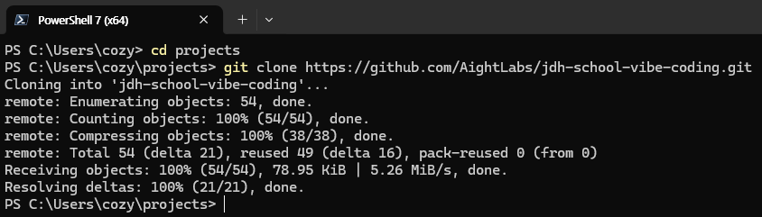
git clone으로 내려받기② 用 git clone 下载5) 내 프로젝트 폴더 만들기建一个我的项目文件夹
먼저 내 작업을 담을 폴더를 하나 만들어요. 바탕화면에 영어 이름으로.先建一个装我作品的文件夹，放桌面，用 英文名字。
- 바탕화면 우클릭 → 새 폴더 → 이름을 영어로 (예:
my-game,my-app)桌面 右键 → 新建文件夹 → 起英文名(例:my-game,my-app) - 또는 터미널에서:
mkdir my-project或在终端:mkdir my-project
폴더 이름·경로에 한글·공백은 피하세요 — 나중에 오류의 원인이 돼요.文件夹名·路径里 别用中文·空格 —— 以后会出错。
6) 스타터 내용을 내 폴더로 복사把模板内容复制到我的文件夹
받은 저장소에서 만들고 싶은 스타터를 골라, 그 폴더 안의 내용을 내 프로젝트 폴더로 복사해요.从下载的仓库里挑一个想做的模板，把那个文件夹 里面的内容 复制到 我的项目文件夹。
starters/game 안의 파일들 (Phaser 3 + 디자인 에셋)starters/game 里的文件(Phaser 3 + 设计素材)
starters/app 안의 파일들 (Tailwind + Vanilla JS)starters/app 里的文件(Tailwind + Vanilla JS)
스타터 폴더 자체가 아니라 그 안의 파일들(index.html · prd.md · context.md · 에셋)을 내 프로젝트 폴더에 넣어요.不是复制模板文件夹本身，而是把它 里面的文件(index.html · prd.md · context.md · 素材)放进我的项目文件夹。
7) VS Code 설치安装 VS Code
winget install Microsoft.VisualStudioCode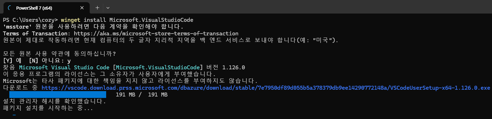
설치 화면에서 “Add to PATH”가 보이면 꼭 체크하세요 — 터미널에서 code 명령이 켜져요. winget이 안 되면 code.visualstudio.com에서 직접 설치.安装界面看到 “Add to PATH” 记得 勾选 —— 终端里 code 命令就能用。winget 不行就到 code.visualstudio.com 手动安装。
터미널에서 code가 안 될 때终端里 code 无效时
보통은 설치 중 “Add to PATH” 체크로 code 명령이 켜져요. 안 되면 아래 한 줄을 PowerShell에 실행하세요.通常安装时勾选 “Add to PATH” 就能用 code。不行就在 PowerShell 里执行下面一行。
[Environment]::SetEnvironmentVariable("Path", $env:Path + ";$env:LocalAppData\Programs\Microsoft VS Code\bin", "User")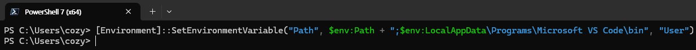
실행 후 PowerShell을 껐다 켜고 code --version을 쳐보세요. 버전이 나오면 성공 — 이제 code .로 폴더를 열 수 있어요.执行后 关掉再开 PowerShell，输入 code --version。出现版本号就成功 —— 现在能用 code . 打开文件夹了。
📄 탐색기 (Explorer)资源管理器 (Explorer)
왼쪽 맨 위 버튼. 내 폴더의 파일 목록이 여기 보여요 — 파일을 눌러서 열어요.左侧 最上面的按钮。这里显示我文件夹的 文件列表 —— 点文件即可打开。
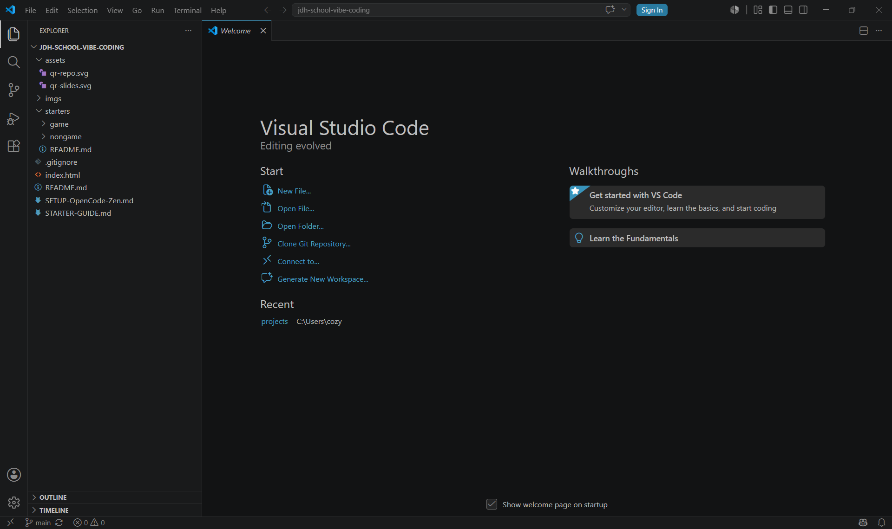
🔀 소스 제어 (Source Control)源代码管理 (Source Control)
Git 버튼. 바꾼 내용을 커밋(세이브)하고 GitHub로 올려요 — 나중에 배포할 때 써요.Git 按钮。把改动 提交(存档) 并上传到 GitHub —— 之后 部署 时用。
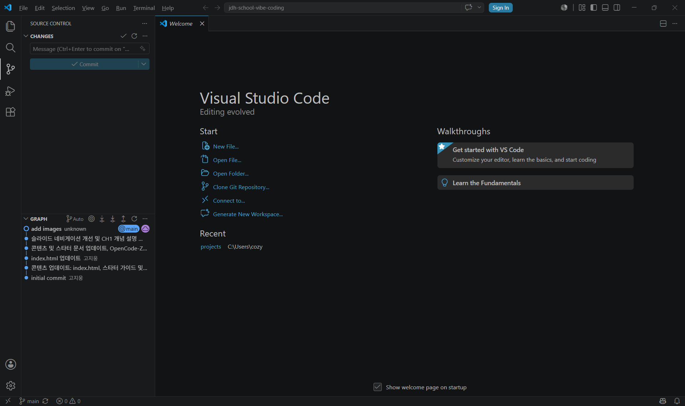
⧉ 확장 (Extensions)扩展 (Extensions)
필요한 기능을 검색해 설치하는 곳 (Ctrl+Shift+X). 바로 다음 장에서 2개를 깔아요.在这里 搜索并安装功能(Ctrl+Shift+X)。下一页就装两个。
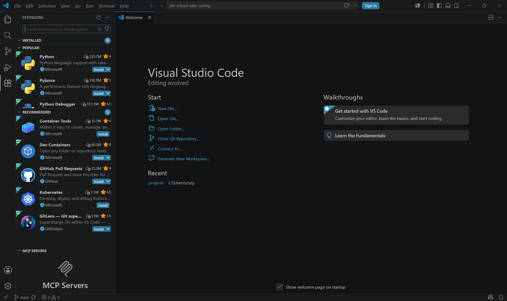
⌨️ 터미널 (Terminal)终端 (Terminal)
아래쪽 명령어 창. Ctrl+` 또는 상단 Terminal → New Terminal로 열어요 — 여기서 OpenCode를 실행해요.下方的 命令窗口。用 Ctrl+` 或顶部 Terminal → New Terminal 打开 —— 在这里运行 OpenCode。
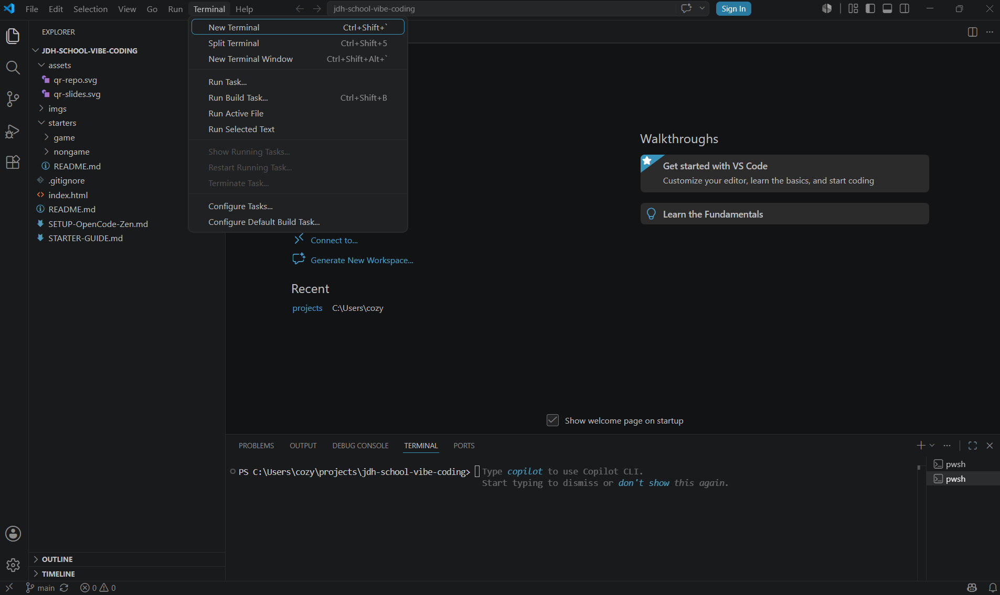
8) VS Code 확장 2개 설치安装 2 个 VS Code 扩展
왼쪽 확장(⧉) 아이콘(Ctrl+Shift+X) → 이름 검색 → Install.左侧 扩展(⧉) 图标(Ctrl+Shift+X) → 搜名字 → Install。
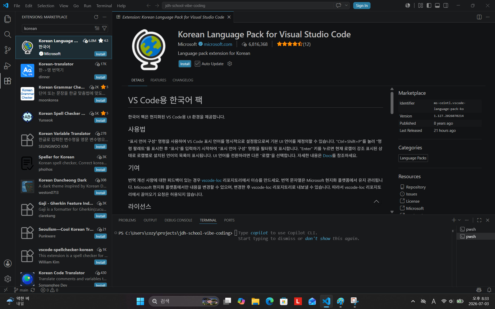
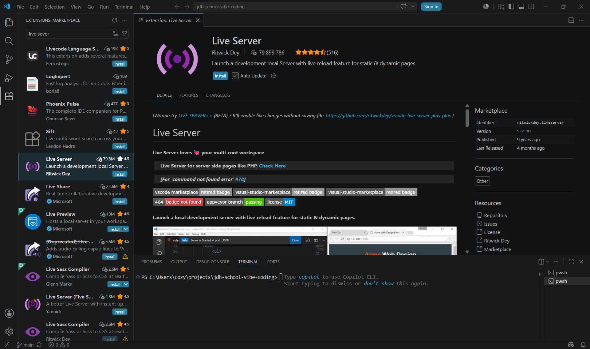
언어팩은 Restart 후 적용. Live Server는 index.html 우클릭 → Open with Live Server.语言包 Restart 后生效。Live Server 用 index.html 右键 → Open with Live Server。
9) VS Code로 프로젝트 열기用 VS Code 打开项目
- VS Code 실행 → File → Open Folder → 내 프로젝트 폴더 선택运行 VS Code → File → Open Folder → 选 我的项目文件夹
- 또는 터미널에서 그 폴더로 이동 후
code .或在终端进入该文件夹后code . - 왼쪽 탐색기에
index.html · prd.md가 보이면 성공左侧资源管理器能看到index.html · prd.md就成功
여기서 작업해요. Git 이름표도 이 폴더 안에서 --global 없이 설정하면 돼요 (앞 슬라이드 참고).就在这里做。Git 名字 也在这个文件夹里不加 --global 设置(见前面那页)。
10) VS Code에서 GitHub 로그인在 VS Code 登录 GitHub
- VS Code 왼쪽 아래 계정 아이콘 → “Sign in with GitHub” → 브라우저에서 AuthorizeVS Code 左下角 账号图标 → “Sign in with GitHub” → 浏览器里点 Authorize
- 미리 가입한 GitHub 계정으로 로그인 상태여야 해요要先用已注册的 GitHub 账号登录
- 나중에 배포(Publish to GitHub)할 때 쓰여요之后 部署(Publish to GitHub) 时会用到
GitHub 로그인은 코드를 올리기(배포) 위한 것, OpenCode는 코드를 만드는 것 — 둘은 다른 도구예요.GitHub 登录是为了 上传(部署)代码，OpenCode 是 生成代码 —— 两个不同的工具。
11) Git 이름표 등록 (email · username)登记 Git 名字 (email · username)
프로젝트를 열었으니, VS Code 터미널(Ctrl+`)에서 이 폴더의 커밋에 찍힐 이름표를 등록해요.项目已打开，在 VS Code 终端(Ctrl+`)里为这个文件夹登记 提交时署的名字。
git config user.name "My Name"
git config user.email "my@email.com"--global은 이름표를 이 컴퓨터(계정) 전체에 새겨서, 공용 노트북이면 다음 사람 커밋에도 내 이름이 남아요. 그래서 내 프로젝트 폴더 안에서 --global 없이 설정하면 그 프로젝트에만 적용돼요.--global 会刻在 整台电脑(账号) 上，公用笔记本会让 下一个人也署我的名。所以 在项目文件夹里 不加 --global，就 只对该项目 生效。
12) 터미널에서 OpenCode 실행在终端运行 OpenCode
opencode이제 OpenCode에게 “prd.md를 보고 ○○해줘”처럼 부탁하며 만들기 시작해요.现在就能对 OpenCode 说 「看着 prd.md 帮我做 ○○」，开始动手做。
내 프로젝트 폴더에서 AI와 함께 개발을 시작할 수 있어요. (다음 챕터부터 ‘잘 시키는 법’을 배워요.)可以在我的项目文件夹里 和 AI 一起开发 了。(下一章开始学「怎么把话说好」。)
13) 모델 연결 — /connect连接模型 — /connect
OpenCode는 ‘창구’일 뿐, 실제로 코드를 써주는 AI 모델을 연결해야 해요. 화면에서 /connect를 입력해 시작합니다.OpenCode 只是 「窗口」，还要连上真正写代码的 AI 模型。在界面输入 /connect 开始。
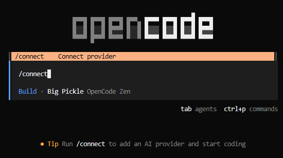
/connect 입력① 输入 /connect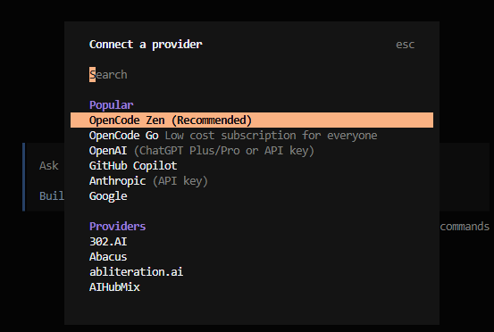
14) API 키 받기获取 API 密钥
키는 “이 모델을 쓸 수 있는 출입증”이에요. 안내에 나온 opencode.ai/zen에서 발급받아요.密钥就像 「使用这个模型的通行证」。到提示里的 opencode.ai/zen 领取。
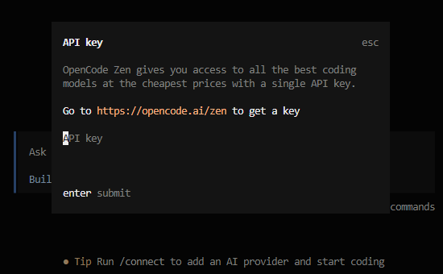
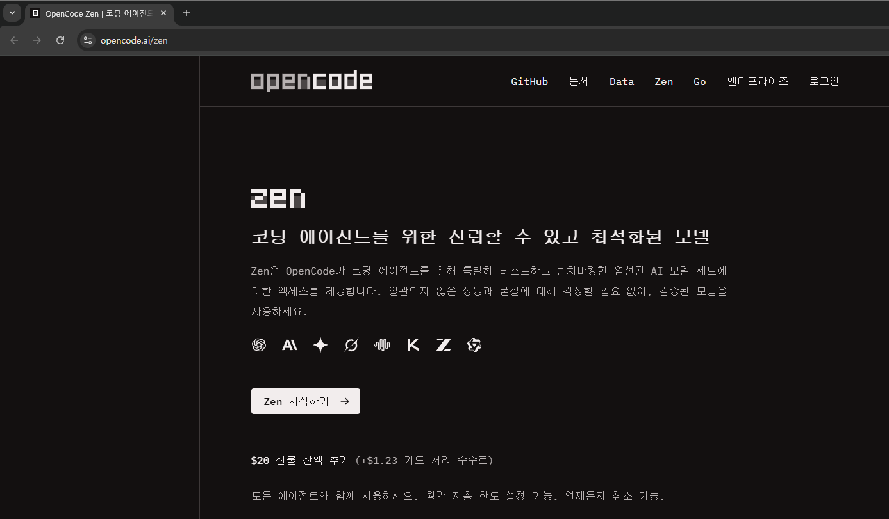
opencode.ai/zen 접속 → 키 발급② 打开 opencode.ai/zen → 领取密钥결제수단(카드)은 등록하지 마세요 — 무료 모델만 쓰면 과금 위험 0. 무료 모델엔 개인정보 입력 금지, 코딩 과제만!不要登记支付方式(卡) —— 只用免费模型就零扣费。免费模型里 禁止输入个人信息，只写编程任务!
15) 키 복사 → 붙여넣기复制密钥 → 粘贴

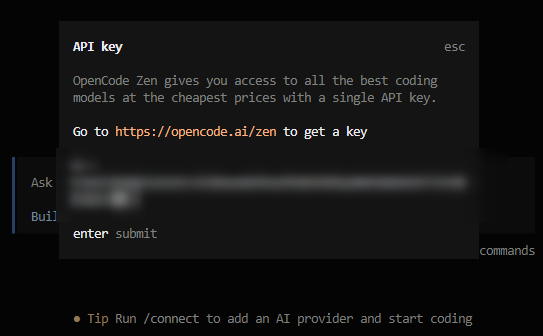
키는 비밀번호처럼 다뤄요 — 남에게 보여주거나 코드에 그대로 올리지 마세요. 한 번 연결하면 다음부턴 자동으로 기억돼요.密钥要 当密码 对待 —— 别给别人看、别直接上传到代码里。连接一次后，之后会自动记住。
16) 무료 모델 고르기挑选免费模型
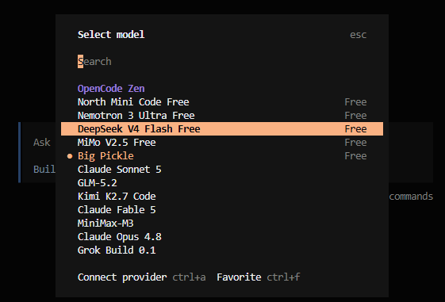
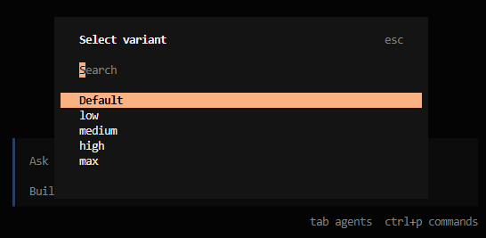
언제든 /models를 입력해 다른 무료 모델로 전환할 수 있어요.随时输入 /models 就能 换其他免费模型。
AI에게 시키기先规划
再让 AI 做
프로젝트 만드는 순서做项目的顺序
PRD.md 작성 → Interactive Mockup.html 생성 → MVP 구현. 와이어프레임·프로토타입은 이 안에 자연스럽게 녹아있어요.写 PRD.md → 生成 Interactive Mockup.html → 实现 MVP。 线框图·原型自然融入其中。
용어 빠르게 정리术语快速梳理
- PRD — Product Requirements Document, 무엇을·왜 만들지 적는 기획서 (제일 먼저!)PRD — 产品需求文档，写清 做什么·为什么 的规划书(最先做!)
- Wireframe(와이어프레임) — 색·꾸밈 없이 어디에 무엇이 있는지 뼈대만Wireframe(线框图) — 无颜色装饰，只画 什么在哪 的骨架
- Mockup(목업) — 색·글꼴까지 입힌 실제로 보일 모습 (아직 안 눌림)Mockup(视觉稿) — 加上颜色·字体的 真实外观(还不能点)
- Prototype(프로토타입) — 버튼이 눌러지고 화면이 넘어가는 시제품Prototype(原型) — 按钮 能点、画面能跳转 的样品
- MVP — Minimum Viable Product, 핵심 하나가 진짜로 도는 최소 제품MVP — 最小可行产品，核心功能真的能跑 的最小产品
완벽을 노리면 못 끝내요. 핵심 하나가 도는 것을 먼저 만들고, 거기서부터 키웁니다.追求完美就做不完。先做出 一个核心能跑的东西，再往上加。
prd.md 작성 — 왜 쓸까?写 prd.md — 为什么?
무엇을 만들지 스스로 설계·정리. 머릿속이 또렷해져요.把要做的东西 自己梳理清楚，思路更明确。
AI가 읽을 자료예요. “prd.md 참고해줘”라고 하면 이걸 보고 만들어요.给 AI 读的资料。说「参考 prd.md」，它就照这个做。
# 제품 기획서 (PRD)
## ① 한 줄 소개 ## ② 누가 볼까 ## ③ 어떤 화면
## ④ 핵심 기능 ## ⑤ 분위기# 产品需求 (PRD)
## ① 一句话介绍 ## ② 给谁看 ## ③ 什么画面
## ④ 核心功能 ## ⑤ 风格최소한만 채우고 OpenCode에 “이 prd.md 검토하고, 빠진 것·넣으면 좋을 걸 나에게 질문해줘” 하면 함께 채워요. (스타터 prd.md엔 뼈대+예시가 들어 있어요)先填最少，再对 OpenCode 说 「检查这个 prd.md，把缺的·该加的问我」，边答边补。(模板 prd.md 里有骨架+示例)
prd.md엔 무엇을 담나prd.md 里写什么
정답 형식은 없어요. 보통 이런 항목을 위→아래로 적고, 각 줄이 AI에게 주는 지시가 돼요. 📝 마크다운 문법 →没有标准格式。通常从上到下写这些项，每一行都是给 AI 的指示。📝 Markdown 语法 →
- ① 한 줄 소개 — 뭘 만드는지 한마디로① 一句话介绍 — 一句话说清做什么
- ② 누가 볼까·즐길까 — 대상 (화면·말투가 정해짐)② 给谁看·谁玩 — 对象(决定画面·语气)
- ③ 화면 구성 — 위→아래로 뭐가 보이나③ 画面结构 — 从上到下有什么
- ④ 핵심 기능·규칙 — 꼭 되는 동작 1~3개④ 核心功能·规则 — 必须能用的 1~3 个
- ⑤ 담을 내용 — 실제 텍스트·데이터⑤ 要放的内容 — 真实文字·数据
- ⑥ 분위기 — 색·글꼴·느낌⑥ 风格 — 颜色·字体·感觉
이 prd.md를 AI가 읽으니, 이제 어떻게 말하느냐(프롬프트)·무엇을 기억하느냐(컨텍스트)가 중요해져요 — 바로 이어서 배워요 →既然 AI 会读 这份 prd.md，那 怎么说(提示词)·记得什么(上下文) 就很关键 —— 接着就学 →
프롬프트 = AI에게 주는 설계도提示词 = 给 AI 的设计图
똑같은 AI라도 어떻게 부탁하느냐에 따라 결과가 완전히 달라져요. 좋은 프롬프트의 3원칙:同一个 AI，怎么问 决定结果天差地别。好提示词的 3 原则:
- 구체적으로 — “예쁘게” ❌ → “배경 남색, 버튼 크고 둥글게, 글씨 흰색” ⭕要具体 — 「好看点」❌ → 「深蓝背景、按钮又大又圆、白字」⭕
- 아는 것에 빗대기 — “가위바위보처럼”, “메모장처럼” 익숙한 걸로 비유하면 AI가 더 잘 알아들어요打比方 — 「像石头剪刀布」「像记事本」用熟悉的东西比喻，AI 更懂
- 하나씩 시키기 — 한 번에 열 개 말고 작게 쪼개서一次一件 — 别一口气十件，拆小了做
아쉬운 vs 좋은 프롬프트差的 vs 好的提示词
“게임 만들어줘”
→ AI가 뭘 만들지 몰라 엉뚱한 걸 만듦「做个游戏」
→ AI 不知道做什么，做出跑偏的东西
“가위·바위·보 버튼 3개, 누르면 컴퓨터가 랜덤으로 내서 승패를 크게 표시, 이기면 점수 +1”「石头剪刀布 3 个按钮，点了电脑随机出，大大显示胜负，赢了分数 +1」
역할(초보 학생이야) + 맥락(prd.md 참고) + 요청(무엇을) + 조건(순수 HTML/JS, 주석) + 출력형식(전체 코드로).角色(我是初学者) + 背景(参考 prd.md) + 要求(做什么) + 条件(纯 HTML/JS、加注释) + 输出形式(给出完整代码)。
그대로 쓰는 프롬프트 틀可直接套用的提示词
[역할] 나는 코딩 처음인 학생이야
[맥락] 이 폴더의 prd.md와 mockup.html을 참고해줘
[요청] index.html 하나에 HTML/CSS/JS로 (무엇을) 만들어줘
[조건] 외부 라이브러리 없이, 초보용 주석
[출력] 완성된 전체 코드[角色] 我是初学编程的学生
[背景] 参考本文件夹的 prd.md 和 mockup.html
[要求] 用一个 index.html 做出(什么)
[条件] 不用外部库，加初学者注释
[输出] 给出完整代码“버튼이 작아. 가운데로 모으고 2배 크게, 이기면 🎉를 결과 옆에 보여줘.” — 구체적으로, 하나씩.「按钮太小。居中并放大 2 倍，赢了在结果旁显示 🎉。」— 要具体、一次一件。
컨텍스트 = AI가 지금 아는 정보上下文 = AI 此刻知道的信息
AI는 내 머릿속을 못 봐요. 내가 준 정보(창)만큼만 봅니다. 이 창의 크기를 컨텍스트 창이라고 해요.AI 看不到我脑子里。它只看得到 我给的信息(窗口)。这个窗口的大小叫 上下文窗口。
- 요즘 AI의 창은 대략 책 한 권 분량(예: 20만 토큰)까지 커졌어요如今 AI 的窗口大到 约一本书的量(例如 20 万 tokens)
- 하지만 무한하지 않아요 — 대화가 길어지면 창이 꽉 차요但 不是无限的 — 对话变长，窗口会被塞满
- 창이 차면 앞 내용을 잊거나 흐릿하게 기억해요塞满后会 忘掉或记不清 前面的内容
큰 걸 만들수록 “무엇을 기억시킬지”를 내가 관리해야 해요. 이게 컨텍스트 엔지니어링이에요.做得越大，越要 由我来管理「让它记住什么」。这就是上下文工程。
세 가지 습관 (도구 무관 원리)三个习惯(与工具无关的原理)
- ① 문서화 — 중요한 결정·규칙을 파일로 적어두기 (
context.md,prd.md)① 记录成文 — 把重要决定·规则 写进文件(context.md、prd.md) - ② 요약 — 세션(대화)이 길어지면 “지금까지 요약”을 만들어 파일에 저장② 做摘要 — 对话变长时，做一份 「到目前为止的摘要」 存进文件
- ③ 재적재 — 새 세션을 시작할 때 그 요약을 먼저 불러오기(붙여넣기/참조)③ 重新载入 — 开新会话时先 把摘要读进来(粘贴/引用)
대화가 너무 길어지면 느려지고 흐려져요. 한 세션 = 한 목표로 짧게 유지하고, 기억은 파일에 남겨 이어가는 게 프로의 방식이에요.对话太长会变慢变糊。一个会话 = 一个目标，保持简短，记忆 留在文件里 接着做，这才是老手的方式。
context.md — 프로젝트 기억 파일项目记忆文件
# 프로젝트 기억 (context)
## 무엇을 만드나
가위바위보 웹게임 (index.html 단일 파일)
## 지금까지 결정
- 색: 남색 배경 + 흰 글씨, 버튼 크고 둥글게
- 점수 기능 추가함, 다시하기 버튼은 아직
## 다음에 할 일
- 이기면 🎉 애니메이션
- 휴대폰에서 버튼 크기 조정# 项目记忆 (context)
## 在做什么
石头剪刀布网页游戏 (index.html 单文件)
## 已决定
- 颜色: 深蓝背景 + 白字，按钮又大又圆
- 已加分数功能，重玩按钮还没做
## 下一步
- 赢了 🎉 加动画
- 手机上调整按钮大小작업을 멈추기 전, 이 파일의 “다음에 할 일”만 업데이트해두면 내일의 내가 편해져요.停工前只要更新这份文件的 「下一步」，明天的自己就轻松了。
새 세션에서 기억 불러오기在新会话里载入记忆
아래는 이 프로젝트의 context.md와 현재 index.html이야.
이 내용을 기준으로 이어서 작업하자.
오늘 할 일: "이기면 🎉 애니메이션 추가"
(여기에 context.md + 코드 붙여넣기)以下是本项目的 context.md 和当前 index.html。
请以此为准继续。
今天要做: "赢了 🎉 加动画"
(在此粘贴 context.md + 代码)AI의 기억은 사람이 관리해요. 파일에 적고 → 새 세션에서 불러오기. 이 습관이 큰 프로젝트를 가능하게 합니다.AI 的记忆 由人来管理。写进文件 → 在新会话里载入。 这个习惯让大项目成为可能。
에서 MVP까지开发 · 从原型
到 MVP
웹앱의 3층 구조 — 오늘은?网页应用的 3 层 — 今天呢?
눈에 보이는 화면 · HTML/CSS/JS (오늘 만드는 것)看得见的 画面 · HTML/CSS/JS(今天做的)
안 보이는 처리·저장 — 오늘은 localStorage로 대체看不见的 处理·存储 — 今天用 localStorage 代替
데이터를 내 브라우저(localStorage)에 저장하면 서버 없이 gh-pages로 충분해요. 나중에 여러 기기·사람과 공유나 로그인이 필요하면 → 부록의 Firebase를 참고하세요.把数据存到 我的浏览器(localStorage)，不用服务器，gh-pages 就够。以后需要 多设备·多人共享 或 登录 → 参考 附录的 Firebase。
바로 만들지 말고, 계획부터别急着做，先列计划
큰 걸 한 번에 시키면 엉뚱하게 가요. 계획(plan.md) → 검토 반복 → 하나씩 실행. 만들 때도 고칠 때도 똑같아요.一次做太多会跑偏。计划(plan.md) → 反复检查 → 逐步执行。新建、修改都一样。
바로 코드부터 쓰지 말고, prd.md를 참고해 "무엇을·어떤 순서로"
만들지 개발 계획을 plan.md에 단계별로 적어줘. 아직 코드는 쓰지 마.先别写代码，参考 prd.md，把"做什么·按什么顺序"
分步写进 plan.md。暂时别写代码。계획을 검토·수정 반복 후 “1단계만 실행해줘”. 버그 수정·기능 추가도 “먼저 어떻게 고칠지 계획해줘” 하고 실행 — 틀린 방향을 코드 전에 잡아요.计划 反复检查·修改 后「只执行 第1步」。改 bug·加功能也先「说说 怎么改」再执行 —— 写代码前先纠偏。
2단계 — Interactive Mockup.html 생성第 2 步 — 生成 Interactive Mockup.html
종이 대신 눌러지는 목업을 AI에게 만들게 해요. prd.md를 열어둔 채:不用纸，让 AI 做一个 能点击的原型。打开着 prd.md:
이 폴더의 prd.md를 참고해서, 실제로 클릭되는 목업을
mockup.html 하나로 만들어줘. 디자인은 단순하게,
버튼을 누르면 화면이 어떻게 바뀌는지 보이게 해줘.参考本文件夹的 prd.md，做一个可点击的原型 mockup.html，
设计简单，点按钮时能看到画面如何变化。이 목업이 마음에 들면, 다음 챕터에서 진짜 동작(MVP)을 채워 index.html로 완성해요.原型满意后，下一章补上 真正的功能(MVP)，完成 index.html。
3단계 — MVP 구현 프롬프트第 3 步 — 实现 MVP 的提示词
index.html을 새로 만들고, prd.md·mockup.html을 함께 열어둔 채 요청해요.新建 index.html，同时打开 prd.md·mockup.html 再提要求。
prd.md와 mockup.html을 참고해서, 핵심 기능이 실제로
동작하는 MVP를 index.html 하나에 HTML/CSS/JS로 만들어줘.参考 prd.md 和 mockup.html，用一个 index.html(HTML/CSS/JS)
做出核心功能真正能运行的 MVP，加初学者注释，给完整代码。OpenCode가 index.html을 직접 고쳐줘요 → 브라우저(Live Server)로 열어 핵심 기능이 도는지 확인!OpenCode 会 直接改 index.html → 用浏览器(Live Server)打开 看核心功能是否运行!
개발 리듬 — 짧은 고리를 반복开发节奏 — 反复短循环
빨간 에러는 그대로 복사해서 “이 에러 났어, 고쳐줘”. (다음 장에서 콘솔 보는 법) 꼬이면 context.md를 들고 새 세션으로.红色报错就 原样复制，说「出了这个错，帮我修」。(下一页看 控制台)乱了就带上 context.md 开新会话。
에러가 나면 — 콘솔(Console) 보기出错了 — 看控制台(Console)
에러는 실패가 아니라 힌트예요. 특히 화면이 하얗게 안 뜨면, 브라우저 콘솔에 이유가 빨간 글씨로 적혀 있어요.报错不是失败，是 提示。尤其 白屏 时，浏览器 控制台 里有红字写着原因。
F12 → Console열기: F12(또는 우클릭 → 검사) → 위쪽 Console 탭. 빨강=에러, 노랑=경고. 에러 줄을 누르면 어느 파일·몇 번째 줄인지도 나와요. 그 줄과 메시지를 통째로 복사해 OpenCode에 주면 대부분 고쳐줘요.打开: F12(或右键 → 检查)→ 上方 Console。红=错误，黄=警告。点错误行能看到 哪个文件·第几行。把那行和信息 整个 复制给 OpenCode，多半能修好。
가벼운 AI 모델, 잘 쓰는 법轻量 AI 模型的用法
무료·빠른 모델(예: DeepSeek Flash)은 똑똑하지만 큰 요청엔 약해요. 이렇게 하면 잘 돼요:免费·快的模型(如 DeepSeek Flash)聪明，但 不擅长大请求。这样用就顺:
- 작게 쪼개기 — 한 번에 기능 하나만 (“점수 표시만 추가해줘”)拆小 — 一次 只做一个功能(「只加个分数显示」)
- 맥락 다시 주기 — 헷갈려 하면
prd.md·context.md를 “다시 읽어줘”重新给上下文 — 迷糊时让它「再读」prd.md·context.md - 실패하면 반으로 — 큰 요청이 안 되면 더 잘게 나눠 다시失败就减半 — 大请求不行就拆更小再试
- 막히면 전환 —
/models로 다른 무료 모델(Nemotron·MiMo 등)卡住就换 —/models换其他免费模型
“다 만들어줘” 한 방보다 작은 조각을 여러 번이 오히려 빠르고 안정적이에요 — 앞서 배운 ‘한 번에 하나씩’과 같아요.比起「全做出来」，小块多次 反而又快又稳 —— 就是之前学的 「一次一件」。
내놓기部署 · 让它
上线
Git이란 무엇인가?是什么?
Git은 코드의 “세이브 포인트”를 관리하는 도구. 저장(커밋)해두면 언제든 되돌릴 수 있어요. 그리고 배포(공개)도 바로 이걸로 해요.Git 是管理代码 「存档点」 的工具。存档(提交)后 随时能回退。之后的 部署(公开) 也靠它。
| Git | GitHub | |
|---|---|---|
| 무엇是什么 | 세이브·버전관리 도구存档·版本管理 工具 | 코드를 올려두는 인터넷 창고存放代码的 网络仓库 |
| 어디在哪 | 내 컴퓨터 안我的电脑里 | 인터넷(클라우드)互联网(云端) |
배포하기 — 스테이징 → 커밋 → 푸시部署 — 暂存 → 提交 → 推送
커밋 전에 어떤 변경을 담을지 고르는 게 스테이징(git add)이에요. VS Code Source Control(왼쪽 🔀)에서:提交前 选好放哪些改动 就是 暂存(git add)。在 VS Code Source Control(左侧 🔀):
+文件旁 +첫 배포는 Publish to GitHub → public 한 번이면 — git init · 저장소 생성 · 커밋 · 푸시를 다 해줘요 (수동 X). Pages 켜기는 Settings에서 한 번(다음 장).首次部署点一次 Publish to GitHub → public —— git init · 建仓库 · 提交 · 推送 全做。开启 Pages 在 Settings 一次(下一页)。
명령어로 하면 (CLI · 원리)用命令行(CLI · 原理)
git add .
git commit -m "first commit"
git pushhttps://ID.github.io/REPO/GitHub 창고 → Settings → Pages → Branch main/(root) → Save → 1~2분 뒤 주소 등장.GitHub 仓库 → Settings → Pages → Branch main/(root) → Save → 1~2 分钟后出现网址。
우리는 GitHub Pages 하나로我们只用 GitHub Pages
- 무료 — 계정만 있으면 끝, 카드 필요 없음免费 —— 有账号就行，不用卡
- Git과 하나 — 방금 배운 커밋·푸시가 곧 배포与 Git 一体 —— 刚学的提交·推送就是部署
- 바로 주소 — 올리면
아이디.github.io주소가 생겨요立刻有网址 —— 一上传就有ID.github.io - 정적 웹앱에 딱 — 우리가 만든 HTML/CSS/JS에 최적正合静态网页 —— 我们做的 HTML/CSS/JS 最合适
Netlify·Vercel(자동배포·커스텀 도메인)이나 앱스토어·구글플레이(‘앱’ 출시)도 있어요. 지금은 GitHub Pages 하나면 충분해요.还有 Netlify·Vercel(自动部署·自定义域名)、App Store·Google Play(以「App」上架)。现在 GitHub Pages 一个 就够了。
이후 3일, 매일 반복하는 5단계之后 3 天，每天重复的 5 步
- ① 열기 — VS Code로 내 폴더 열고 context.md 먼저 읽기 (어제까지 상황 파악)① 打开 — 用 VS Code 打开我的文件夹，先读 context.md(了解到昨天为止的进度)
- ② 고치기 — OpenCode에게 “오늘은 ○○ 추가” → 저장 → 확인② 修改 — 对 OpenCode 说「今天加 ○○」→ 保存 → 查看
- ③ 세이브 — Source Control에서 스테이징 → ✓ Commit③ 存档 — 在 Source Control 暂存 → ✓ Commit
- ④ 올리기 — Sync/Push → 1~2분 뒤 내 주소에 반영!④ 上传 — Sync/Push → 1~2 分钟后网址就更新!
- ⑤ 기록 — context.md에 “오늘 한 것 · 다음 할 일” 갱신 (내일·새 세션에서 AI가 이어줌)⑤ 记录 — 在 context.md 更新「今天做了什么 · 下次要做什么」(明天/新对话里 AI 好接着做)
시작할 때 context.md 읽기, 끝날 때 갱신하기. AI는 지난 대화를 잊어도, 이 문서는 안 잊어요 — 긴 프로젝트를 이어가는 비결.开始时读 context.md，结束时更新它。AI 会忘记之前的对话，但这份文档不会 —— 这就是把长项目坚持下去的秘诀。
내 데이터는 어디에 저장될까?我的数据存在哪里?
내 브라우저 안에만 저장. PC에 넣은 건 폰에 안 보여요. (오늘 만든 앱)只存在我的浏览器里。PC 存的手机看不到。(今天做的应用)
인터넷의 공용 창고. 여러 기기·여러 사람이 같이 봐요.互联网上的公用仓库。多设备·多人一起看。
가족과 공유·친구와 채팅처럼 여럿이 같은 데이터를 보려면 공용 창고(서버·DB)가 필요해요. 서버 코드를 직접 안 짜도 되는 Firebase로 다음 장에서 붙여봐요.想像家人共享·和朋友聊天那样 多人看同一份数据，就需要公用仓库(服务器·DB)。下一页用不用自己写服务器代码的 Firebase 来接上。
Firebase란? — 서버 없이 쓰는 백엔드什么是 Firebase? — 免服务器的后端
Firebase는 구글이 만들어 둔 ‘이미 완성된 백엔드 세트’예요 — 데이터 저장(DB)·로그인·파일 보관 같은 걸 내가 서버를 안 만들어도 그냥 가져다 써요.Firebase 是谷歌做好的 「现成后端套件」 —— 数据存储(DB)·登录·文件保存等，不用自己搭服务器 直接拿来用。
서버 컴퓨터 빌리고 → 서버 프로그램 짜고 → DB 설치·관리… 어렵고 돈·시간이 들어요.租服务器 → 写服务器程序 → 装并维护 DB… 又难又费钱费时。
서버 관리를 구글이 대신해줘요. 나는 앱 코드만, 서버·DB는 신경 끄기!服务器交给谷歌管。我只写 应用代码，服务器·DB 不用操心!
서버는 있지만 구글이 관리해서 내 눈엔 안 보이는 것. 그래서 gh-pages(화면) + Firebase(저장·로그인)로 서버 코드 한 줄 없이 진짜 앱을 만들어요.服务器是有的，只是 谷歌帮你管、你看不到而已。所以用 gh-pages(界面) + Firebase(存储·登录)，一行服务器代码都不用写 就能做出真正的应用。
가족·친구와 공유하기 — Firebase和家人·朋友共享 — Firebase
- 저장/불러오기 함수만 Firebase로 교체 (앱 화면은 그대로)只换存取函数 为 Firebase(界面不变)
- Firebase config는 공개돼도 OK (비밀키 아님) — 대신 보안 규칙을 걸어요Firebase config 公开也没关系(不是密钥)—— 但要设 安全规则
- 로그인 없이 “가족 코드”로 같은 장부를 공유할 수도 있어요不登录也可用 「家庭码」 共享同一份数据
“이 앱 저장을 Firebase로 바꿔서 폰이랑 PC가 같이 보이게 해줘.”"把这个应用的存储 换成 Firebase，让手机和 PC 看到同一份。"
직접 해보기 ① — Firebase 콘솔 세팅动手做 ① — Firebase 控制台设置
- ① firebase.google.com 접속 → 구글 로그인 → 프로젝트 만들기(이름 짓기)① 打开 firebase.google.com → 谷歌登录 → 创建项目(起名)
- ② 웹 앱 추가 — 프로젝트 화면에서
</>아이콘 클릭 → 앱 별명 입력 → 등록② 添加 Web 应用 — 在项目页点</>图标 → 输入应用别名 → 注册 - ③ firebaseConfig 복사 — 화면에 뜨는 주소·키 묶음을 복사 (비밀번호 아님, 공개 OK)③ 复制 firebaseConfig — 复制页面上的地址·key (不是密码，可公开)
- ④ Firestore Database — 왼쪽 메뉴 → 데이터베이스 만들기 → 테스트 모드로 시작④ Firestore Database — 左侧菜单 → 创建数据库 → 以 测试模式 开始
- ⑤ 지역 선택 —
asia-northeast3(서울) → 완료⑤ 选择地区 —asia-northeast3(首尔) → 完成
30일 동안 누구나 읽고 쓰기 가능(연습용). 실제로 공개하기 전엔 보안 규칙을 꼭 걸어요 → 다음 장.30 天内 任何人都能读写(练习用)。正式公开前一定要设 安全规则 → 下一页。
직접 해보기 ② — 코드에 붙이고 규칙 걸기动手做 ② — 接入代码并设规则
복사한 config를 index.html에 붙이고, 나머지 연결은 OpenCode에게 맡기면 돼요.把复制的 config 贴进 index.html，其余连接 交给 OpenCode。
const firebaseConfig = {
apiKey: "…", authDomain: "…",
projectId: "…", appId: "…"
}; // ← 콘솔에서 복사한 값 붙여넣기“이 firebaseConfig로 Firestore에 저장·불러오기를 붙여줘. 보안 규칙도 로그인/가족코드 기준으로 만들어줘.”"用这个 firebaseConfig 接上 Firestore 的 存取，安全规则 也按登录/家庭码帮我写。"
진짜 잠그기 — 로그인(Auth)真正上锁 — 登录(Auth)
“가족 코드”만으론 코드를 아는 남이 들어올 수 있어요. 진짜로 막으려면 로그인이 필요하고, 그건 Firebase Auth가 해줘요.只有 「家庭码」 的话，知道码的人都能进来。要真正挡住就得 登录，这靠 Firebase Auth。
간단하지만 코드를 알면 누구나 들어와요.简单，但 知道码的人都能进。
내 계정으로 로그인한 사람만 내 데이터에 접근.只有用 我的账号 登录的人才能访问。
이메일·비밀번호, 구글 계정, 익명 로그인 등 — 콘솔에서 켜기만 하면 돼요. 코드는 몇 줄이면 붙고요 → 다음 장에서 직접 해봐요.邮箱·密码、Google 账号、匿名登录等 —— 在控制台开启即可，代码几行就能接 → 下一页动手试。
로그인 붙이기 — Auth 직접 해보기接入登录 — Auth 动手做
로그인도 콘솔에서 켜고, 나머지 코드는 OpenCode에게 맡기면 돼요.登录也是 在控制台开启，其余代码 交给 OpenCode。
- ① Authentication 켜기 — 콘솔 왼쪽 메뉴 Authentication → 시작하기① 开启 Authentication — 控制台左侧 Authentication → 开始使用
- ② 로그인 방법 선택 — 이메일/비밀번호 또는 Google을 켜기 (클릭 한 번)② 选择登录方式 — 开启 邮箱/密码 或 Google(点一下)
- ③ 로그인 버튼 추가 — 구글은
signInWithPopup한 줄, 이메일은 가입·로그인 폼③ 加登录按钮 — Google 用signInWithPopup一行，邮箱用注册·登录表单 - ④ 규칙과 연결 — “로그인한 사람만”:
allow read, write: if request.auth != null;④ 与规则连接 — 「只限登录者」:allow read, write: if request.auth != null;
“Firebase Auth로 구글 로그인 버튼을 붙이고, 로그인한 사람만 자기 데이터를 읽고 쓰게 보안 규칙도 맞춰줘.”"用 Firebase Auth 加 Google 登录 按钮，并把 安全规则 设成 只有登录者 能读写自己的数据。"
문제 해결 — 자주 막히는 곳问题解决 — 常见卡点
- winget이 안 돼요 → 다운로드 링크(방법 B)로 설치winget 不行 → 用下载链接(方法 B)安装
- git 명령이 인식 안 됨 → PowerShell을 껐다 켜기git 命令不识别 → 关掉再打开 PowerShell
- OpenCode 모델이 느리거나 막힘 →
/models로 다른 무료 모델 전환 (예: DeepSeek V4 Flash)OpenCode 模型慢或卡住 → 用/models换其他免费模型(如 DeepSeek V4 Flash) - 배포 404 → 파일명 index.html · Branch main · 1~2분 대기部署 404 → 文件名 index.html · Branch main · 等 1~2 分钟
- 바꿨는데 반영 안 됨 → Commit+Push 했는지 확인, 강력 새로고침(Ctrl+Shift+R)改了没生效 → 确认已 Commit+Push，强制刷新(Ctrl+Shift+R)
Markdown(.md) 기초 문법Markdown(.md) 基础语法
prd.md · context.md · README에 쓰는 간단한 글 문법. 미리보기는 Ctrl+Shift+V写 prd.md · context.md · README 的简单文本语法。预览按 Ctrl+Shift+V
| 문법语法 | 결과效果 |
|---|---|
| # 제목 · ## 소제목 | 큰 제목 · 중간 제목大标题 · 中标题 |
| **굵게** | 굵게 표시加粗 |
| - 항목 · 1. 항목 | 글머리 목록 · 번호 목록项目符号 · 有序列表 |
| `코드` | 코드 글자 강조行内代码 |
| [링크](https://...) | 클릭되는 링크可点击链接 |
|  | 이미지 넣기插入图片 |
백틱 3개 ``` 로 위아래를 감싸면 여러 줄 코드가 상자로 보여요.用三个反引号 ``` 上下包住，多行代码会显示成代码框。
코드는 어떻게 ‘실행’될까?代码是怎么「运行」的?
우리가 쓴 코드는 사람이 읽는 글자예요. 컴퓨터(CPU)는 기계어(0과 1)만 알아들어서, 중간에 번역이 필요해요.我们写的代码是 给人读的文字。电脑(CPU)只懂 机器语言(0 和 1)，所以中间需要 翻译。
미리 통째로 번역해 실행파일로. 빠름. (C · 자바 · Swift)提前整体翻译 成可执行文件。快。(C · Java · Swift)
한 줄씩 즉석 번역하며 실행. 유연. (파이썬 · JS)逐行即时翻译 并运行。灵活。(Python · JS)
HTML·CSS·JS는 브라우저가 즉석에서 읽어 실행해요 — 그래서 저장하고 새로고침만 하면 바로 결과가 보여요.HTML·CSS·JS 由 浏览器即时读取 运行 —— 所以保存后刷新就能立刻看到结果。
코드는 ‘어디서’ 돌아갈까?代码在「哪里」运行?
프로그램은 혼자 못 돌아요. 늘 무언가(무대) 위에서 실행돼요 — 대표 무대 셋:程序不能独自运行，总在 某个「舞台」上 执行 —— 三个代表舞台:
- 💻 OS(운영체제) — 윈도우·맥·리눅스 위에서 도는 설치형 앱 (한글, PC 게임)💻 OS(操作系统) — 在 Windows·Mac·Linux 上运行的 安装型应用(游戏)
- ☕ JVM(자바 가상머신) — 자바를 OS 안 가리고 돌려주는 ‘가상 컴퓨터’ (안드로이드·기업 서버)☕ JVM(Java 虚拟机) — 让 Java 不挑 OS 运行的「虚拟电脑」(安卓·企业服务器)
- 🌐 브라우저 — HTML·JS가 도는 무대. 우리가 만든 게 여기! 설치 없이 어디서나.🌐 浏览器 — HTML·JS 运行的舞台。我们做的就在这! 免安装、随处可用。
브라우저는 윈도우·맥·폰 어디에나 있어서, 한 번 만들면 모두가 링크로 열 수 있어요.浏览器在 Windows·Mac·手机上都有，做一次大家 都能用链接打开。
개발 언어의 종류와 쓰임开发语言的种类与用途
언어마다 잘하는 분야가 달라요. “무엇을 만드느냐”에 따라 골라 써요.每种语言 擅长的领域 不同，按「要做什么」来选。
- JavaScript — 웹 화면·웹앱 (오늘 우리가 쓴 것!)JavaScript — 网页·Web 应用 (今天我们用的!)
- Python — AI·데이터 분석·업무 자동화Python — AI·数据分析·自动化
- Java / Kotlin — 안드로이드 앱·기업용 서버Java / Kotlin — 安卓应用·企业服务器
- Swift — 아이폰·맥 앱 · C / C++ — 게임 엔진·시스템Swift — iPhone·Mac 应用 · C / C++ — 游戏引擎·系统
- SQL — 데이터베이스에 “찾아줘”라고 묻는 언어SQL — 向数据库「查询」的语言
문법은 달라도 “순서대로 시키고, 조건·반복”이라는 뼈대는 같아요. 하나를 익히면 나머지는 훨씬 쉬워져요.语法不同，但 「按顺序执行、条件·循环」 的骨架相同。学会一个，其余就容易多了。
개발자에도 여러 종류가 있어요开发者也分很多种
‘개발자’는 한 종류가 아니에요. 무엇을 맡느냐에 따라 나뉘어요.「开发者」不是只有一种，按 负责什么 来分。
- 🎨 프론트엔드 — 눈에 보이는 화면 (웹·앱 UI) · ⚙️ 백엔드 — 서버·DB, 안 보이는 처리🎨 前端 — 看得见的界面(Web·App UI) · ⚙️ 后端 — 服务器·DB 等看不见的处理
- 🔗 풀스택 — 프론트+백엔드를 둘 다 하는 사람🔗 全栈 — 前端+后端 都做 的人
- 📱 모바일 — 아이폰·안드로이드 앱 개발📱 移动端 — iPhone·安卓 应用开发
- 🤖 데이터·AI — 데이터 분석·AI 모델을 만드는 사람🤖 数据·AI — 做数据分析·AI 模型的人
- 🎮 게임 — 게임 엔진·그래픽 · 🛠 DevOps — 배포·서버 운영을 자동화🎮 游戏 — 游戏引擎·图形 · 🛠 DevOps — 自动化部署·运维
요즘은 AI 덕분에 경계가 흐려지고 한 사람이 여러 역할을 하기도 해요. 오늘 여러분은 프론트엔드(웹 화면)를 만들어 본 거예요!如今有了 AI，界限变模糊，一个人也常身兼多职。今天你们做的就是 前端(网页界面)!
서버와 클라우드란?什么是服务器和云?
요청하면 응답하는 항상 켜진 컴퓨터 (식당 주방)有请求就回应的 常开电脑(餐厅厨房)
그 컴퓨터를 사지 않고 빌려 쓰는 것 (전기·수도처럼)不买那台电脑，而是 租用(像水电)
GitHub Pages도 클라우드 서버에 내 파일을 올려 24시간 보여주는 거예요.GitHub Pages 也是把我的文件放到云服务器上，24 小时展示。
프론트엔드 vs 백엔드前端 vs 后端
눈에 보이는 화면 · HTML/CSS/JS看得见的界面 · HTML/CSS/JS
안 보이는 처리·저장 · 서버·DB看不见的 处理·存储 · 服务器·数据库
프론트엔드예요. 회원가입·데이터 저장이 필요해지면 백엔드가 붙어요.是 前端。需要注册·存数据时，才加上后端。
데이터베이스란?什么是数据库?
정보를 차곡차곡 저장하고 빠르게 찾는 전문 창고. 거대한 엑셀표라고 생각하면 쉬워요.把信息整齐存好、快速查找的 专业仓库。想成一张超大的 Excel 表就好。
API란?什么是 API?
프로그램끼리 정보를 주고받는 약속된 창구. 식당 웨이터와 같아요 — 주문하면 주방에서 받아 음식을 가져다줘요.程序之间交换信息的 约定窗口。就像餐厅 服务员 — 你点单，他从厨房取菜端来。
도메인 · IP · DNS域名 · IP · DNS
- IP — 컴퓨터의 진짜 번호 (예: 142.250.x.x)IP — 电脑真正的号码(例: 142.250.x.x)
- 도메인 — 사람이 외우기 쉬운 이름 (google.com)域名 — 人易记的名字(google.com)
- DNS — 이름을 번호로 바꿔주는 전화번호부DNS — 把名字换成号码的电话簿
아이디.github.io도 도메인이에요. 나중에 mysite.com을 사서 연결할 수도 있어요.ID.github.io 也是域名。以后可买 mysite.com 绑定。
왜 바이브코딩이 될까? (LLM)为什么 Vibe 编程行得通? (LLM)
오늘 OpenCode로 연결해 쓰는 AI도 LLM(대규모 언어 모델)이에요. 엄청난 글을 학습해 “다음에 올 말”을 예측하는 똑똑한 자동완성이죠.今天通过 OpenCode 连接使用的 AI 也是 LLM(大语言模型)。学了海量文本，去 预测「下一个词」 的聪明自动补全。
- 코드도 “이럴 땐 보통 이렇게”를 잘 만들어줘요写代码时也能给出「这种情况通常这样」
- 예측은 내가 준 말·맥락에 따라 달라져요 → 그래서 프롬프트·컨텍스트가 중요!预测会 随我给的话·上下文而变 → 所以 提示词·上下文 很重要!
- 똑똑하지만 가끔 틀려요 → 최종 확인은 사람 몫聪明但 偶尔会错 → 最后检查靠人
오픈소스 · 버그와 디버깅开源 · Bug 与调试
코드를 누구나 보고·쓰고·고치도록 공개한 것. Phaser·Tailwind·리눅스 모두 오픈소스! GitHub이 그 광장이에요.把代码 公开给所有人看·用·改。Phaser·Tailwind·Linux 都是开源! GitHub 就是这个广场。
오류 = 버그(벌레), 고치는 일 = 디버깅. 옛날 컴퓨터에 진짜 나방이 껴 고장 난 데서 유래했대요.错误 = Bug(虫子)，修它 = 调试。据说源自旧电脑里真卡进一只蛾子。
에러는 실패가 아니라 힌트예요. 메시지를 읽고(또는 AI에게 주고) 하나씩 고치면 돼요.报错不是失败，是 提示。读它(或给 AI)，一个个修就好。
Maker, 첫 발을 디뎠어요 🚀成为与 AI 一起创造的
Maker，迈出了第一步 🚀
앞으로는 필요한 걸 AI로 배우며 직접 공부해 나가면 돼요.
그래도 지금 당장, 여러분은 원하는 걸 만들 수 있어요.这次是在老师准备的模板里做出来的。
以后要用 AI 边学边自己钻研需要的东西。
但就在此刻，你已经能做出想要的东西了。